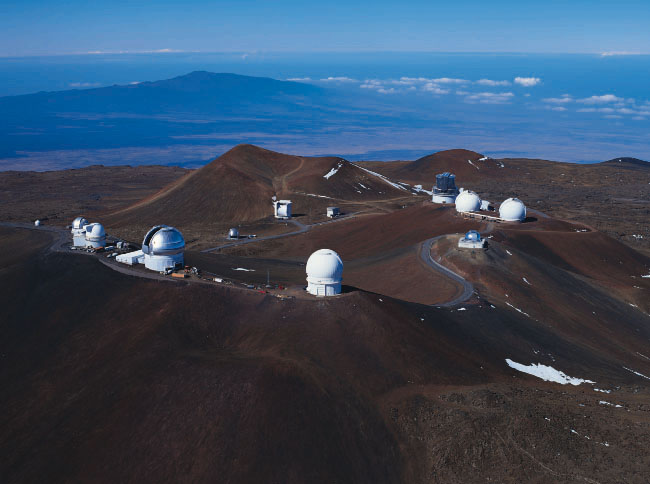

Mauna Kea Observatories viewed from the Northeast

In the foreground on the summit ridge, from left to right, are the
UH 0.6-meter
telescope (small white dome), the United Kingdom Infrared Telescope,
the
UH 2.2-meter telescope, the Gemini Northern 8-meter telescope
(silver,
open) and the Canada-France-Hawaii Telescope. On the right are the
NASA
Infrared Telescope Facility (silver), the twin domes of the W.M.
Keck Observatory;
behind and to the left of them is the Subaru Telescope. In the
valley below
are the Caltech Submillimeter Observatory (silver), the James Clerk
Maxwell
Telescope (white, open), and the assembly building for the
submillimeter
array.
The cinder cone in the center of the photograph is Pu`u Poliahu.
In
the distance is the dormant volcano Hualalai (altitude 8,271
feet), located
near Kailua-Kona.
For more pictures and information see http://www.ifa.hawaii.edu/images/aerial-tour/